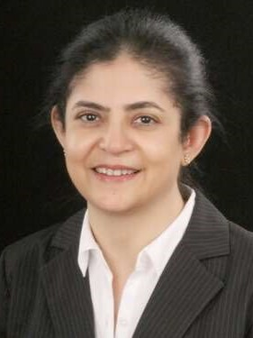

Our Honorable Speakers
Prof. Dr. Aris Papageorghiou
MBChB MD FRCOG
Dr. Petya Chaveeva
Associate Professor
Medical University - Pleven
Prof. Dr. Ashok Khurana
Chairman and Cusultant in Reproductive Ultrasound,
The Ultrasound Lab, New Delhi

Dr. Mala Sibal
Consultant Gynecologist,
Dept. of Fetal Medicine & OBG Ultrasound
Manipal Hospital, Bangalore, India
Dr. Mohammad Akhter Hossain
Founder President & Program Director, Shristy Institute for Health Sciences & Technology Ltd.
Prof. Dr. Jasmine Ara Haque
Director, Institute of Nuclear Medicine & Allied Sciences, Dhaka Medical College Hospital Campus
Prof. Dr. Parveen Fatima
Former Chairman, Department of REI, BSMMU, President Fertility and Sterility Society of Bangladesh

Dr. Swati Munshi
Associate Consultant, Radiology and Imaging,
Square Hospitals Ltd.